やってみよう！
最近食べておいしかったものを、ひとこと教えてください。お店の料理でも、コンビニのおやつでも、自分で作ったものでもOKです。
2026年10月23日｜第5回｜担当：髙田
今日は第5回｜制作の幅を広げ、総合演習へ
| 回・日程 | テーマ | 担当 |
|---|---|---|
| 1｜9/25 | AI 基礎 | 伊藤・髙田 |
| 2｜10/2 | プロンプトエンジニアリング | 髙田 |
| 3｜10/9 | AIの活用と倫理 | 伊藤 |
| 4｜10/16 | AIを活用したアプリ生成① | 伊藤 |
| 5｜10/23（今日） | AIを活用したアプリ生成② | 髙田 |
| 6｜11/6 | 総合演習 | 髙田・伊藤 |
| 7｜11/13 | 総合演習 | 伊藤・髙田 |
23分｜0〜23分
2分｜0〜2分
次にすること：前回の制作を振り返り、今日広げる3つの方向を確認します。
5分｜2〜7分
最近食べておいしかったものを、ひとこと教えてください。お店の料理でも、コンビニのおやつでも、自分で作ったものでもOKです。
最近おいしかったものを1つ、短文で投稿。投稿・リアクションを含む5分。
最近おいしかったもの：コンビニのかぼちゃプリン投稿したら、ほかの人の投稿にもリアクションしてみましょう。
1分｜7〜8分
| 順番 | 前回の道順 | やったこと |
|---|---|---|
| 01 | 小さくつくる・仕組みを知る | ポートフォリオ・タイマー・ToDo／保存・DB |
| 02 | 保存・同期・認証をつなぐ | Firestore・ログイン／同期と権限 |
| 03 | チャットにログインと履歴を追加 | 新しいチャット・認証・会話の保存 |
| 04 | チャットの改良・共有・振り返り | 使いやすさ・紹介ページ・共有 |
1分｜8〜9分
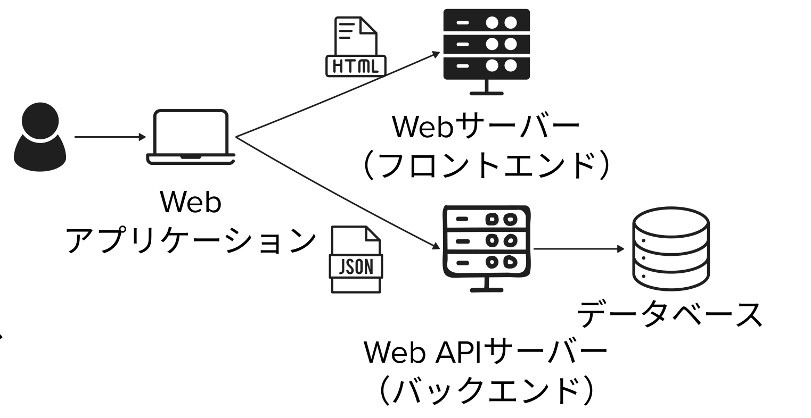
3分｜9〜12分
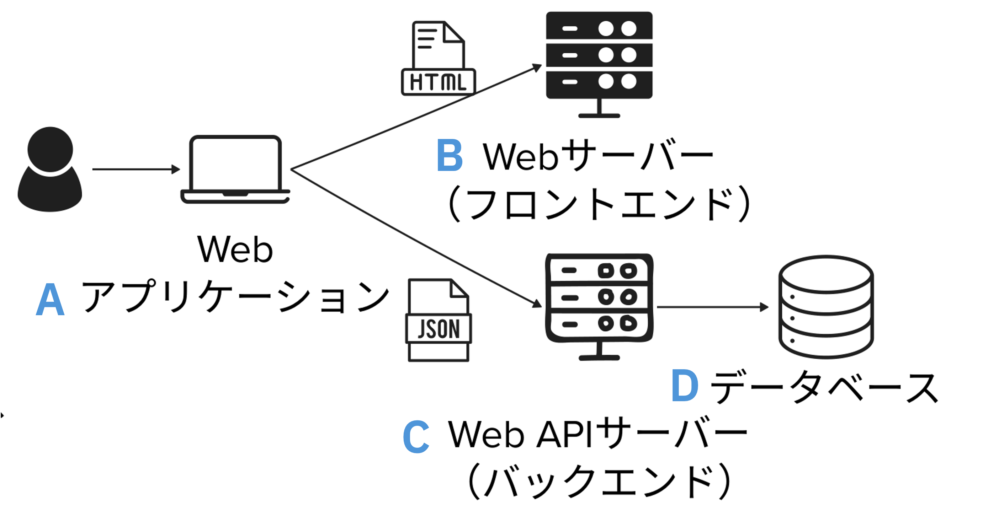
図のA〜Dの役割を、次の選択肢から選びましょう。
A〜Dそれぞれに対応する選択肢の番号。
A：○、B：○、C：○、D：○
4分｜12〜16分
前回使った5つの技術・サービスは、図のどの位置や役割に関係するでしょう？
すべてが図の箱に収まるでしょうか？ 箱に収まらないものには、理由もひとこと添えましょう。
5つの技術・サービスの位置づけを各1行。図に書き込んだ画像でもOKです。
Google AI Studio：○○
ToDo・チャットアプリ（操作画面）：○○
Cloud Firestore：○○
Firebase Authentication：○○
Security Rules：○○3分｜16〜19分
| 技術・サービス | 対応の考え方 |
|---|---|
| クイズ1 | A＝3／B＝2／C＝4／D＝1 |
| Google AI Studio | 図全体を作る・改良する道具 |
| ToDo・チャット | 画面はA。保存・ログインを含む全体は複数の役割にまたがる |
| Cloud Firestore | Dの保存に対応。保存・取得の機能も提供 |
| Firebase Authentication | C側の認証機能に関係する |
今回への問い：マイクはどこにつながる？ → 利用者側の端末からWebアプリへ。
2分｜19〜21分
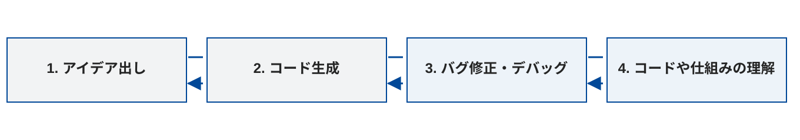
2分｜21〜23分
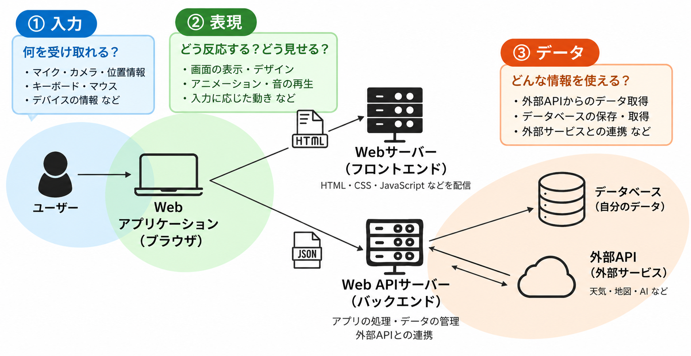
| 工夫ポイント | 問い | 今日試すこと |
|---|---|---|
| ① 入力 | 何を受け取れる？ | マイクやデバイスの情報 |
| ② 表現 | どう反応する？ どう見せる？ | 入力・処理・出力の設計 |
| ③ データ | どんな情報を使える？ | 外部APIからのデータ取得 |
100分×2コマ。必須内容は180分、残り20分は制作・相談。休憩は別枠です。
27分｜23〜50分
1分｜23〜24分
1分｜24〜25分
これまでは文字を入力したり、ボタンをクリックしたりしてアプリを操作しました。
声を出す、手を動かす、端末を傾ける。そんな操作も入力にできるでしょうか？
音・光・動きなど、身の回りの情報を受け取る装置。端末が何を受け取れるかを知ると、入力方法のアイデアが広がります。
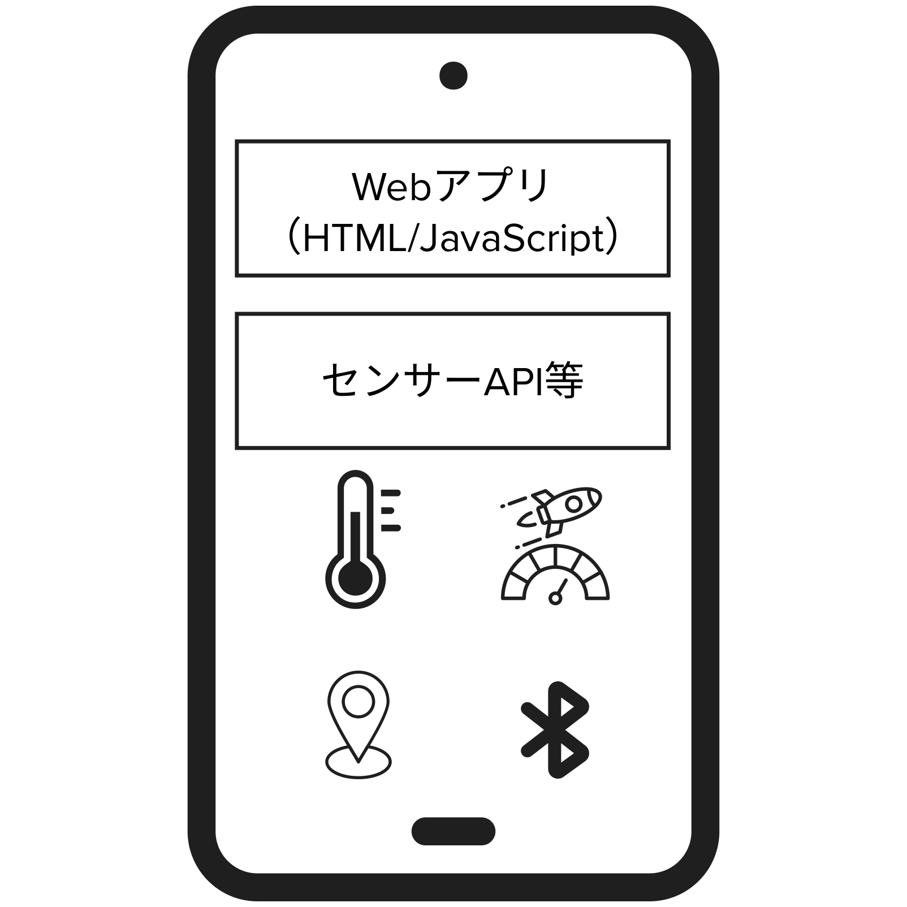
身近な端末には、どんなセンサーがあるでしょう？
1分｜25〜26分
PCにも、音や光を受け取るセンサーを使った入力装置があります。
| PCの入力装置・機能 | 受け取る情報 | 身近な利用例 |
|---|---|---|
| マイク | 音 | オンライン会議、録音 |
| カメラ | 映像 | ビデオ通話、写真撮影 |
| 位置情報（ネットワーク測位） | 現在地 | 地図で現在地を表示する |
位置情報はGPSだけで取得するものではありません。多くのPCでは、周囲のWi-Fi情報から現在地を推定します。
15分｜26〜41分
Google AI Studioで新しいアプリAを作り、マイクの音を波形で表示するアプリを作りましょう。
マイクを許可して開始し、声や音で波形が変わることを確認。停止ボタンでマイクの使用を終了する。
PCのマイクから入力された音をリアルタイムで可視化するWebアプリを作ってください。 マイクの開始・停止ボタンを用意し、音声の波形を画面に表示してください。 マイクの使用許可がない場合や利用できない場合には、状態が分かるメッセージを表示してください。 音声を録音・保存・外部送信する必要はありません。ブラウザ内で処理してください。
アプリAの画面。未完成なら、試した操作・現象・エラーも。使えなければ教員のデモで確認。
1分｜41〜42分
スマホは持ち歩くので、動きや位置に関する情報が身近です。
| センサー・機能の例 | 受け取る情報 | 入力として使うアイデア |
|---|---|---|
| 加速度センサー | 動きの変化 | 振ると絵柄が変わる |
| ジャイロセンサー | 回転の動き | 傾けてボールを転がす |
| GPS | 現在地 | 近くの場所を案内する |
機種によって搭載するセンサーは異なります。
2分｜42〜44分
スマホで歩数を数えるとき、主にどの情報を使うか、番号を1つ選びましょう。
選んだ番号を1つ。余裕があれば理由もひとこと。
クイズ：○番考える・投稿する時間を含む2分です。
2。動きのパターンから歩数を推定します。判定方法や精度は端末・アプリによって異なります。
2分｜44〜46分
体に着けるため、日常の動きや体の状態に関する情報を扱いやすくなります。
| センサーの例 | 受け取る情報 | 利用例 |
|---|---|---|
| 加速度・ジャイロセンサー | 腕や体の動き | 歩数や運動の記録に利用する |
| 光学式心拍センサー | 光を使って捉えた血流の変化 | 心拍数の推定に利用する |
端末が測れることと、Webアプリから使えることは別です。 専用アプリやサービスとの連携が必要な場合があります。今回は仕組みと応用例の紹介です。
4分｜46〜50分
MediaDevices APIは許可を得て入力を取得。Web Audio APIは音声を解析・処理します。
AIが音を聞いて描くのではなく、アプリがブラウザのAPIを使います。端末・OS・ブラウザ・権限によって使える機能は異なります。
参考：MDN：getUserMedia ／ MDN：Web Audio API ／ MDN：Sensor APIs ／ Apple：HealthKit
50分｜50〜100分
1分｜50〜51分
次にすること：アプリAを続けて改良。音と操作の反応を作り、調整します。
7分｜51〜58分
| アプリ | 入力 | 処理 | 出力 |
|---|---|---|---|
| 音声波形 | マイクの音声 | 波形の値を取り出す | 波形を描く |
| 風船 | 吹く音 | 音が入る間、大きさを増やす | 風船が膨らむ |
同じ入力でも、処理と出力で体験が変わります。マイクで直接「息の量」を測るわけではありません。
5分｜58〜63分
アプリAの音声入力を使って、何をどう変化させるか考えましょう。ここでは「ふーっと吹くと風船が膨らむ」を例にします。自分の案で進めてもOKです。
自分の案について、入力・処理・出力を各1行。
入力：マイクに向かって「ふーっ」と吹く音
処理：一定以上の音が入っている間、風船の大きさを少しずつ増やす
出力：吹くたびに風船が膨らみ、吹くのをやめても大きさが残る音を使う反応を1つ決め、入力・処理・出力で説明できる。
10分｜63〜73分
前の演習で決めた音への反応を、アプリAに追加しましょう。 波形表示は残します。
音で波形以外のオブジェクトも変わる。マイクを停止したときの表示も確認する。
今ある音声波形アプリの機能を残し、画面に風船を追加してください。 マイクに向かって「ふーっ」と吹くと、その音に反応して風船が少しずつ大きくなるようにしてください。 吹くのをやめたら、その大きさを保ってください。マイクを停止している間は膨らまないようにしてください。 画面からはみ出さない最大サイズと、最初の大きさに戻すリセットボタンを用意してください。
アプリ画面＋音によって何が変化したかを1文。未完成なら、試した指示・できたこと・困っていること。
5分｜73〜78分
音への反応に別の操作を1つ追加するとしたら、どんな体験にできるでしょう？ クリック・ドラッグ・スクロールから選び、追加する入力と変化を1組決めましょう。
追加する入力と、それによる変化を各1行。
追加する入力：風船をドラッグする
変化：風船を好きな位置に動かす。息を吹くと膨らむ反応は残す。音への反応に加える操作と、その操作による変化が決まっている。
12分｜78〜90分
アプリAに、前の演習で選んだ操作を追加しましょう。 音への反応と、追加した操作への反応を両方試します。
音と、クリック・ドラッグ・スクロールなどの操作で、それぞれの反応を確認する。
音声波形と、ふーっと吹くと風船が膨らむ機能を残してください。 風船をドラッグして好きな位置に移動できるようにしてください。 移動した後も、息を吹くと膨らむようにしてください。
アプリ画面＋それぞれの入力で何が変わるかを1文。スクロールが難しければ、クリック・ドラッグでもOK。
10分｜90〜100分
作ったアプリAを操作し、気になる点を1つ直しましょう。 同じ操作をもう一度試して、調整前後を比べます。
同じ操作をもう一度試し、調整前後を比較する。音と追加操作の両方が引き続き動く。
周囲の小さな物音だけでも風船が膨らんでしまいます。 ある程度大きな音にだけ反応するように調整してください。 反応し始める音の大きさを画面のスライダーで調整できるようにしてください。 波形表示と、風船をドラッグで移動する機能は残してください。
なし。投稿せず、動作確認と調整に時間を使います。
30分｜100〜130分
1分｜100〜101分
1分｜101〜102分
コードを閲覧・コピーできるリンク。共有設定やログイン条件を確認します。
来場者が使うためのURL。公開後もログイン・DBの権限は別に確認します。
前回のチャットを開きましょう。URLは、受け取った人がさらに広めることもあります。
1分｜102〜103分
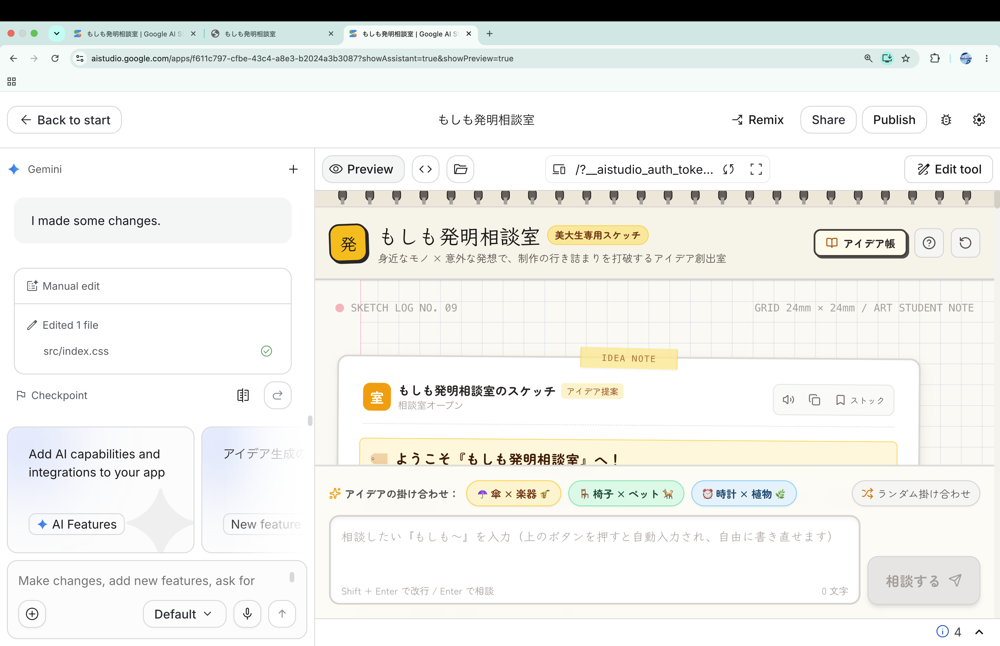
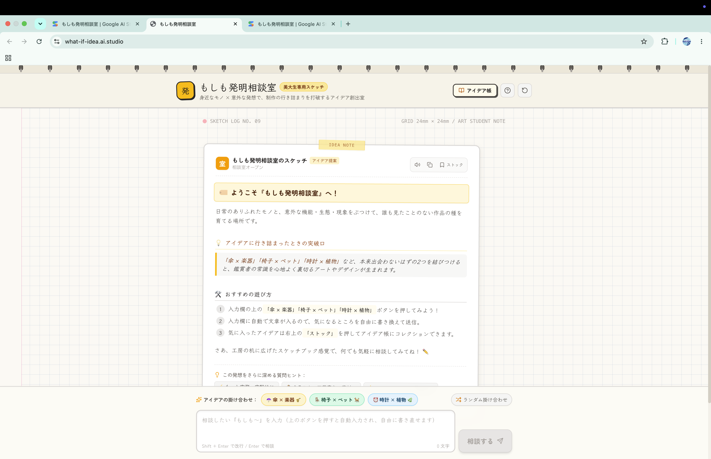
2分｜103〜105分
誰がアクセスできるか。URLが転送されることも考えます。
Shareではコードを閲覧・コピーできます。プロンプトも公開できる内容に。
個人情報・実際の履歴・秘密のAPIキーを含めない。キーはサーバー側のSecretsで管理。
公開先のGemini API呼び出しは作成者のキーを使用。無料枠・上限・課金設定を確認。
3分｜105〜108分
Google Cloud Starter Tierでは最大2アプリ。カード登録は不要。3つ目は公開停止または有料環境への移行が必要。
Google Workspaceなどは対象外。利用できるかはアカウントによって異なります。
「2アプリまで」はPublishの制限。Shareとは別です。
出典：Google公式：公開手順・対象条件（README掲載内容）
12分の演習内｜108〜120分
Google AI Studioで前回作ったチャットアプリを開き、右上のPublishを押します。
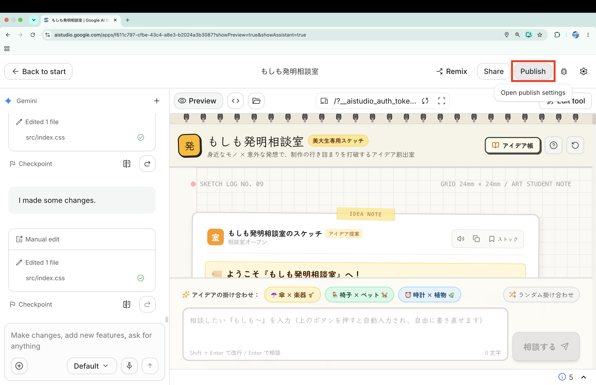
公開の説明を確認し、Get startedで設定へ進みます。
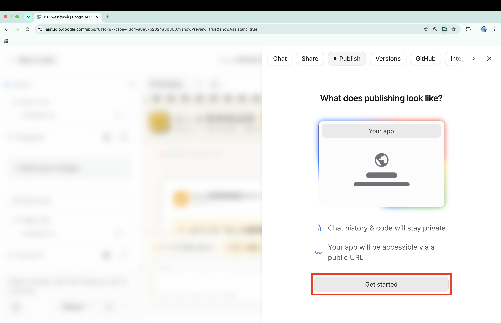
12分の演習内｜108〜120分
DescriptionとApp URLを確認し、利用条件を読んでPublish your appを押します。
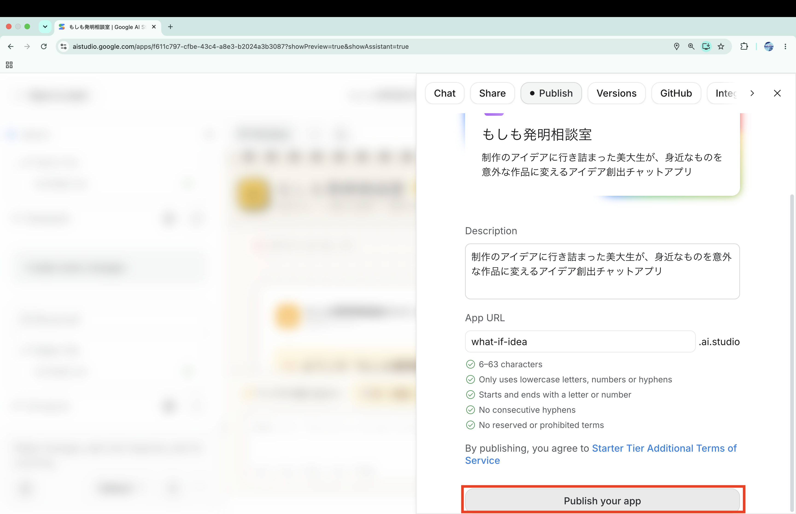
Publishing your appは処理中の表示です。完了するまで待ちましょう。
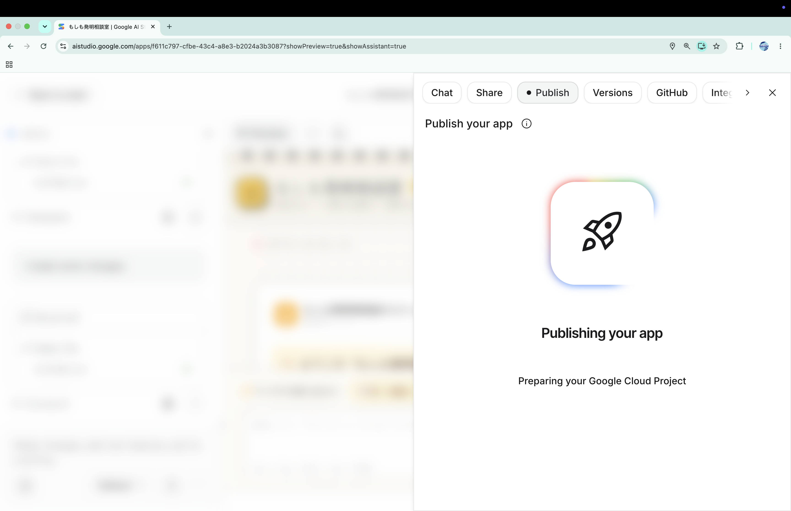
12分の演習内｜108〜120分
Visitから公開アプリを開き、チャットを1往復。隣の人にも開いてもらい、App URLをコピーします。
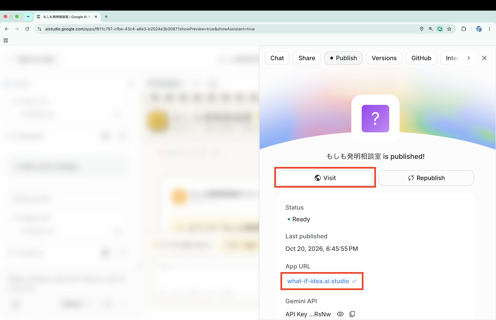
公開停止はPublish画面のUnpublish appから。今回は押しません。停止時は確認画面を読み、停止後のURLも確認します。
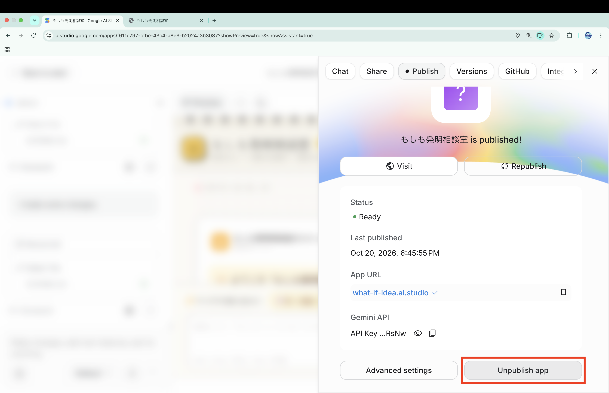
12分の演習内｜108〜120分
公開URLを開き、チャットを1往復しましょう。
ログインや履歴も、隣の人と確認しましょう。
アプリ名＋PublishしたURL＋確認結果。
アプリ名：もしも発明相談室
公開URL：https://what-if-idea.ai.studio
確認結果：公開URLから開き、
チャットを1往復できました。5分｜120〜125分
未提出の人は、学祭展示用Googleフォームを提出しましょう。
提出済みの人は、回答の編集からURL欄をPublishしたURLへ差し替えましょう。
タイトル・キーワード・概要・PublishしたアプリのURL。
学祭展示用Googleフォームを開く
125〜130分：予備・個別相談。完了者は隣の人と表示・ログイン・履歴を確認。
43分｜130〜173分
1分｜130〜131分
次にすること：外部APIのデータを読み、取得して、新しいアプリCに表示します。
4分｜131〜135分
要求（リクエスト）→ データを探す → 取得結果（レスポンス）をアプリへ返す。
マイクなどの機能に加え、インターネット上のサービスのデータを使えます。
規約・料金・回数制限・キーの要否・出典。画像は個別の権利も確認。秘密のキーはブラウザのコードやSlackに載せません。
9分｜135〜144分
次は読み方を練習するための架空のJSONデータです。気温・天気・風速に当たる項目名と値を読み取り、各1行でSlackに投稿しましょう。
{
"temperature": 22,
"weather": "sunny",
"windSpeed": 3.5
}「項目名」: 値 が1組。文字列は引用符で囲み、数値は囲みません。単位はこの例からは分かりません。
気温・天気・風速に当たる項目名と値を各1行。
気温の項目名：○○／値：○○ 天気の項目名：○○／値：○○ 風速の項目名：○○／値：○○
3分｜144〜147分
| 候補・公式資料 | 受け取るデータ | アプリの例 |
|---|---|---|
| Open-Meteo | 気温・天気・風速 | 京都の気温を表示 |
| PokéAPI | 名前・タイプ | 特徴を表示する図鑑 |
| Art Institute of Chicago API | 作品タイトル・作家 | 美術作品の情報カード |
次は、この3候補から1つ選びます。公式資料で取得できる情報と利用方法を確認。
11分｜147〜158分
以下の候補から1つ選び、取得例のURLをブラウザで開きましょう。返ってきたデータから、少なくとも1つの値を探します。
| 候補・開くURL | 探す項目 |
|---|---|
| Open-Meteo：京都付近の気温 | current.temperature_2m／単位はcurrent_units |
| PokéAPI：ピカチュウ | name、height（単位は公式資料で確認） |
| Art Institute of Chicago：作品1件 | data.title、data.artist_display |
取得結果の画面＋API名・項目・実際に表示された値。値は自分の画面から転記します。
URL・操作・エラーを記録して教員へ。サンプルで進む場合は「サンプルデータ使用・実際のAPI取得は未確認」と明記。
12分｜158〜170分
Google AI Studioで新しいアプリCを作り、選んだAPIを使うアプリを作りましょう。見せる情報や見た目は自由です。
前の取得結果と、場所・項目・時刻を見比べて確認する。
Open-Meteoを使って、京都の天気が分かるWebアプリを作ってください。 現在の気温と天気を、見やすい文字とアイコンで表示してください。 APIから実際のデータを取得し、更新ボタンで最新の情報を取得できるようにしてください。 読み込み中や取得に失敗した場合も分かるようにしてください。 データの時刻と、データ提供元のOpen-Meteoも表示してください。
アプリCの画面＋使ったAPIと、何ができるアプリかを1文。サンプル使用時はその旨と未確認の点も。
3分｜170〜173分
取得元を変えると、同じWebアプリでも作れる機能が広がります。
追加のSlack投稿は不要です。
7分｜173〜180分
1分｜173〜174分
次にすること：今日の学びを振り返り、自由制作のアイデアを3案以上考えます。
1分｜174〜175分
マイクやセンサーの情報で操作する。
音や操作への反応を工夫する。
外部APIから受け取った情報を使う。
1分｜175〜176分
| 回・日程 | テーマ | 担当 |
|---|---|---|
| 1｜9/25 | AI 基礎 | 伊藤・髙田 |
| 2｜10/2 | プロンプトエンジニアリング | 髙田 |
| 3｜10/9 | AIの活用と倫理 | 伊藤 |
| 4｜10/16 | AIを活用したアプリ生成① | 伊藤 |
| 5｜10/23（今日） | AIを活用したアプリ生成② | 髙田 |
| 6｜11/6 | 総合演習 | 髙田・伊藤 |
| 7｜11/13 | 総合演習 | 伊藤・髙田 |
4分｜176〜180分
「何を作る／誰が使う／何ができる」を3案以上書きましょう。 最も興味がある案に★を付けて、Slackへ投稿します。
制作アイデア3案以上。次回はこのメモを出発点に、小さく作り、試して改良します。
★1. 課題しめきり管理／大学生／提出日と進み具合を確認
2. 英単語クイズ／英語を学ぶ人／間違えた単語を練習
3. 作品紹介サイト／展示の来場者／画像と制作意図を読む自分の制作アイデアが3案以上あり、一番興味のある案に★が付いている。